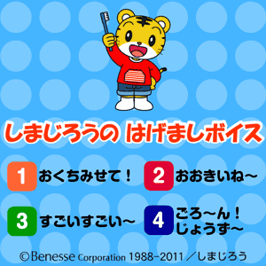

<!-- main -->
<div id="main">

<div id="kyouzai">

<div class="block">
  <h3>しまじろうのはげましボイス</h3>
<br />
  <p>歯磨きのときに役立つしまじろうのはげましボイスです。「お口見せて！」「すごいすごい～」などがダウンロードできます。</p>
</div><!-- /.block -->

<div class="block">
<p class="play">■使い方<br/>
使いたいボイスをタップで選んでください。<br />
</p></div><!-- /.block -->

<div class="red_btn"><a href="src/petit_f_1108_android.swf" rel="external"></a></div>


<div class="block">
<a href="http://www.youtube.com/watch?v=xHUpoYfdSQ4" style="color:#ff6699;" rel="external"><span style="color:#ff6699;font-size:medium">ボイスの使い方動画「ボイスって<br />なあに？」を見る</span></a> (約30秒)<br /><br />
<p class="tx_gray">※モバイルYouTubeを利用して動画をご覧いただけます。<br />
※モバイルYouTubeは大量のパケット通信をおこなうアプリケーションです。携帯端末からYouTubeで動画を見る前に、ご契約の携帯電話のプランが「パケット定額サービス」かどうかご確認ください。<br />
※ご利用の機種によっては動画が見られないことがあります。<br />
※音声つきです｡マナーモードを解除してお使いください｡<br /></p>
</div><!-- /.block -->

</div><!-- /#kyouzai -->

</div><!-- /#main -->
